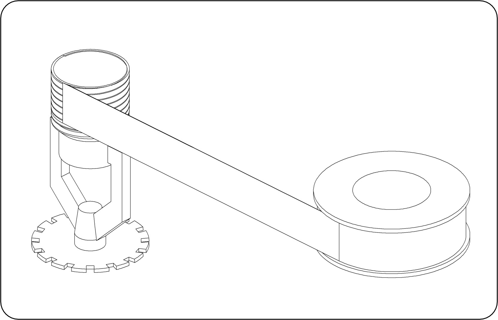
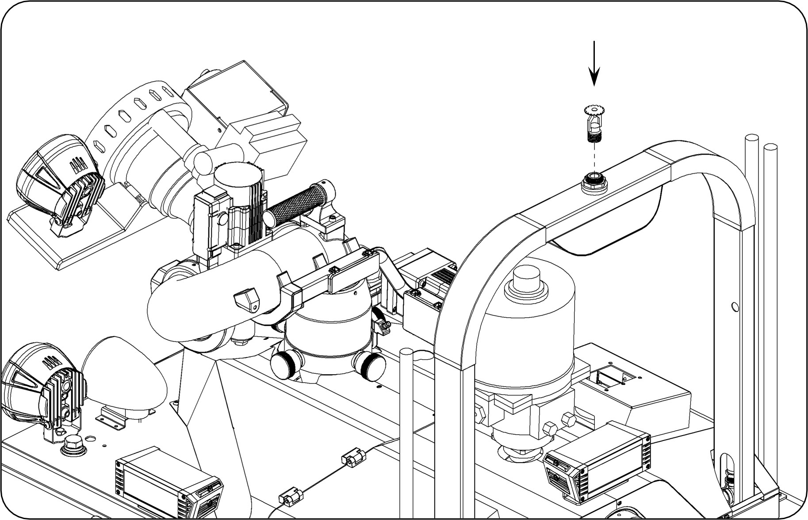
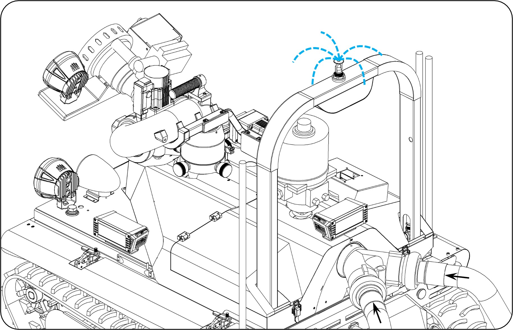

SOP-01：灑水頭更換
故障描述： 灑水頭無法正常作動
原因分析： 外力砸傷
| 項目 | 品名 / 料號 | 規格 | 數量 |
|---|
| 一般工具 | 活動板手 | 35mm以上 | 2 支 |
| 零組件 | 感知灑水頭 (19005009) | 1/2" 向上型 | 1 個 |
| 耗材 | 止洩帶 | 纏繞 10~15 圈 | - |
🛠️ 維修流程
步驟 1： 使用止洩帶纏繞新的灑水頭，纏繞圈數約 10~15 圈。

步驟 2： 使用活動板手將底座固定，並拆卸損壞的灑水頭。
步驟 3： 將纏繞好止洩帶的新灑水頭鎖緊。

步驟 4： 接上水帶測試功能，確認正常即完成維修。

⬅️ 回到目錄首頁